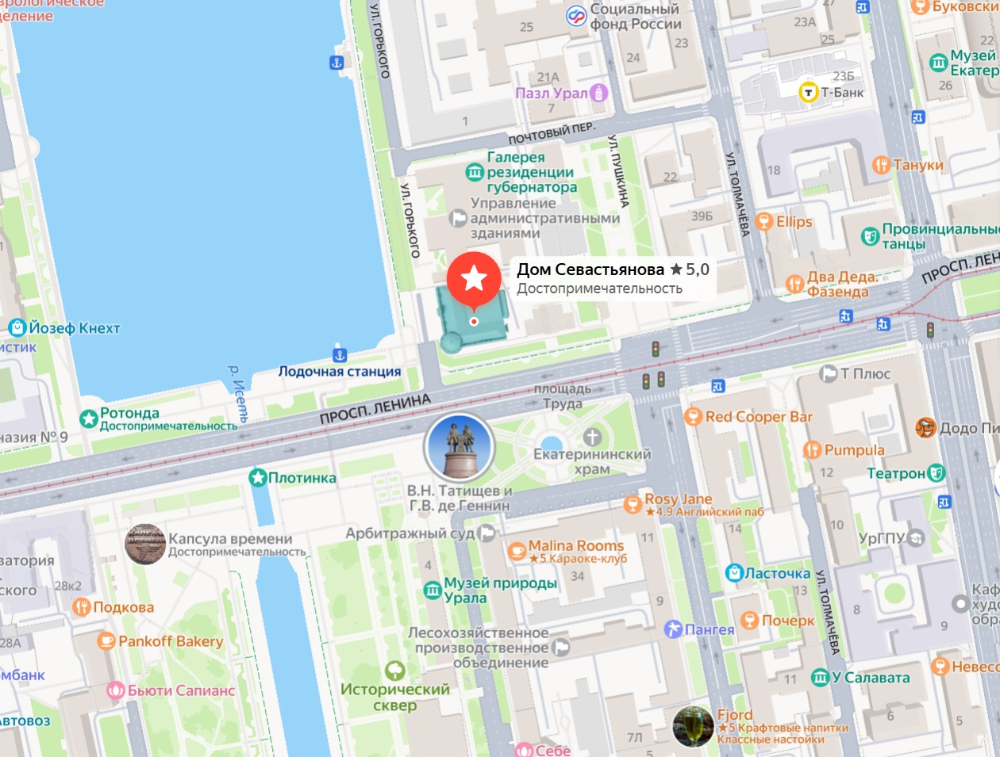
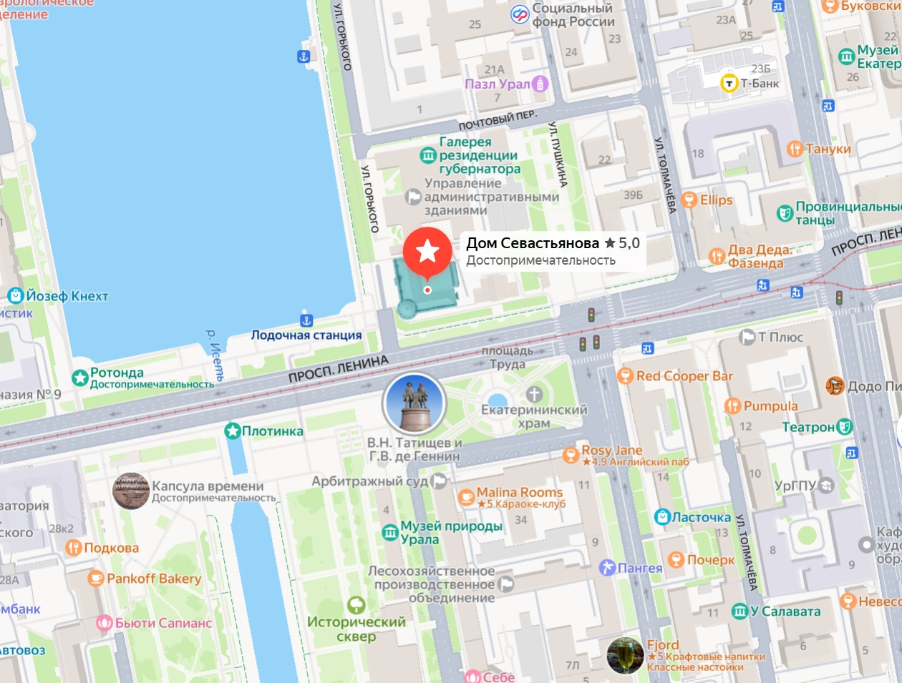
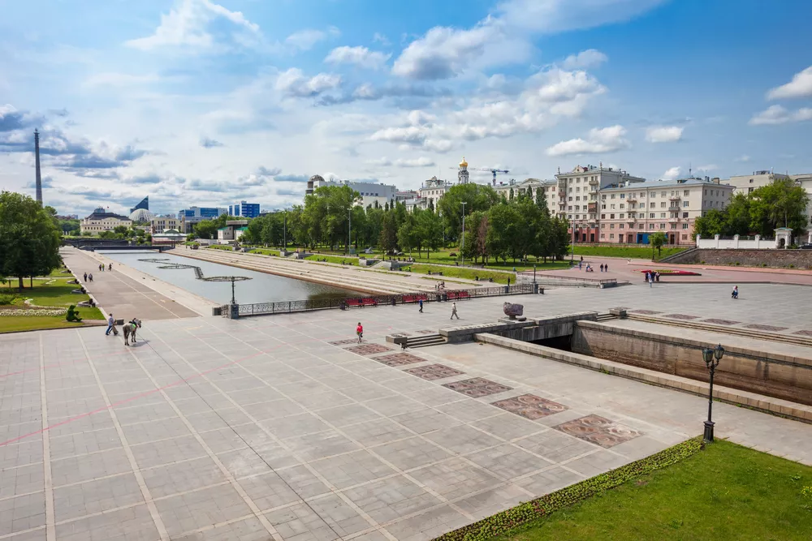
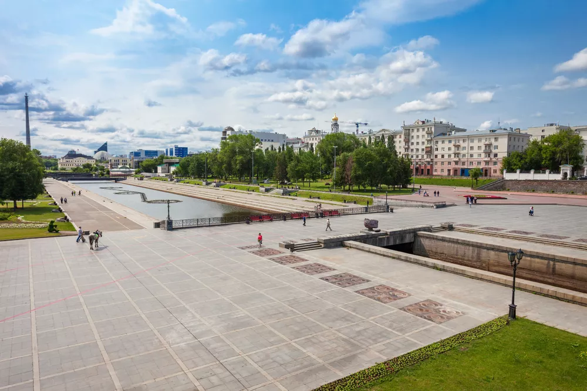

Дом Севастьянова
Здание в стиле неоготики, возведенное в в 1866 году, является визитной карточкой города. Со времен саммита ШОС здесь находится екатеринбургская резиденция президента РФ. Глядя на масштабы и изысканный стиль, особняк Севастьянова скорее хочется назвать дворцом, нежели обычным домом. В архитектуре здания сплелись сразу несколько архитектурных стилей, среди которых эклектика, барокко, неомавританский и даже немного готики. Столь примечательное здание в советское время не могло стать техническим училищем или же чем-то подобным, поэтому долгое время здесь заседали местные представители коммунистической партии, а после Перестройки здание сдавали различным конторам под офисы. Такое обращение негативно сказалось на исторической сохранности дома Севастьянова, но благодаря реставрации удалось восстановить былой вид интерьера и экстерьера. Сейчас по внутренним помещениям особняка проводят экскурсии, на которых вы сможете воочию увидеть как жили дворяне в Екатеринбурге 150 лет назад.


 
